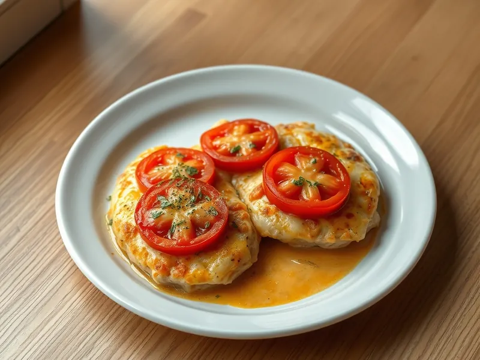

Фото: Иллюстрация ИИ, Cloudflare Workers AI
Куриные отбивные с помидорами и сыром в духовке
Отбитое филе под помидорами и сырной корочкой, запечённое на противне
30 мин3 порц.442 ккал на порциюБ 59 · Ж 20 · У 5Интернациональная кухня
Продукты на 3 порц.
- Куриное филе600 г
- Помидоры2 шт
- Сыр твёрдый120 г
- Сметана 20%3 ст. л.
- Чеснок1 зуб.
- Растительное масло1 ч. л.
- Соль0,5 ч. л.
- Перец чёрный молотый2 щеп.
- Сушёные травы по желанию1 ч. л.
Как готовить
- Включите духовку на 200 °C (сильный жар). Разрежьте филе вдоль на пласты и отбейте до толщины 1 см, посолите и поперчите. Это 7 минут.
- Смажьте противень маслом и разложите отбивные. Смешайте сметану с выдавленным чесноком и смажьте мясо сверху.
- Нарежьте помидоры кружками 0,5 см и выложите на курицу, посыпьте травами. Сверху распределите тёртый сыр.
- Запекайте 18-20 минут, пока сыр не расплавится и не зарумянится.
- Проверьте в толстом месте: сок прозрачный, мясо белое. Дайте постоять 2 минуты и подавайте.
Совет. Не берите слишком сочные помидоры или срежьте с них лишний сок с семенами, иначе на противне будет лужа. Сыр подойдёт любой хорошо плавящийся.